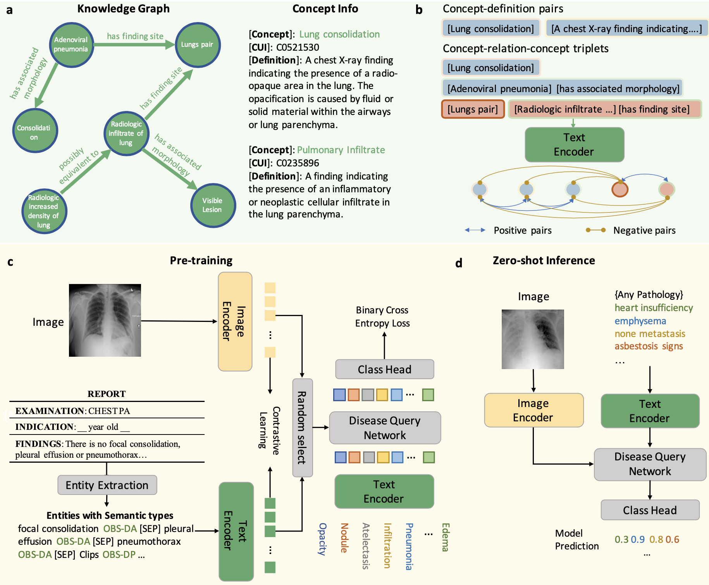

KAD: Knowledge-enhanced auto-diagnosis of chest X-ray images
|
|
1CMIC, Shanghai Jiao Tong University
|
Abstract
Foundation models pre-trained on a broad system of general data demonstrate significant gains across various domains including computer vision and natural language processing.
However, the application in the medical domain is still in the initial stage, as the problems in medical diagnosis naturally require long-tailed and fine-grained knowledge understanding, thus heavily relying on expertise from clinicians.
Here we propose a medical knowledge-enhanced vision-language pre-training method for auto-diagnosis of chest X-ray images, termed as Knowledge-enhanced Auto Diagnosis~(KAD),
which leverages domain expert knowledge from the medical knowledge base Unified Medical Language System (UMLS) to improve vision-and-language understanding and facilitate the zero-shot disease diagnosis.
KAD demonstrates superior ability in auto-diagnosis of unseen pathologies, with zero-shot performance significantly higher than precious medical VLP models, and even comparable to fully-supervised approaches.
Notably, this is the first foundation model in X-ray with zero-shot performance comparable or exceeding the average for expert radiologists.
Architecture
Overview of the KAD workflow.
(a), Knowledge base used for training the text encoder. It contains two parts, knowledge graph consisting of concept-relation-concept triplets and concept info list consisting of concept-definition pairs.
(b), In the first stage, the text encoder is trained to learns textual representations by maximizing similarities between positive pairs.
(c), In the second stage, we employ the pre-trained text encoder to perform image-text contrastive learning with paired chest X-rays and entities extracted from the radiology reports and optimize a Disease Query Network (DQN) for classification.
(d), During the inference stage, we simply encode the disease name as a query input, and DQN will output the probability that the pathology is present in the input image.

Results
R1: Padchest
Comparison of KAD with SOTA medical image-text pre-training models on unseen radiographic findings in the PadChest dataset.

R2: ChestXray14
Comparison of proposed KAD with SOTA self-supervised baseline models and medical image-text pre-training models on ChestXray14 with different ratio of labeled data used.

R3: CheXpert
Comparisons of proposed KAD with SOTA medical image-text pre-training models and three board-certified radiologists on five competition pathologies in CheXpert dataset.

Visualization
Sample visualization of randomly chosen samples from NIH ChestXray14, we present both the original image (left) and an attention map generated from KAD (right).
In the original images, red boxes denote lesion areas annotated by radiologists.
In the attention maps, the red to blue spectrum are plot on the original image with red representing high attention regions and blue representing low attention.

Acknowledgements
Based on a template by Phillip Isola and Richard Zhang.